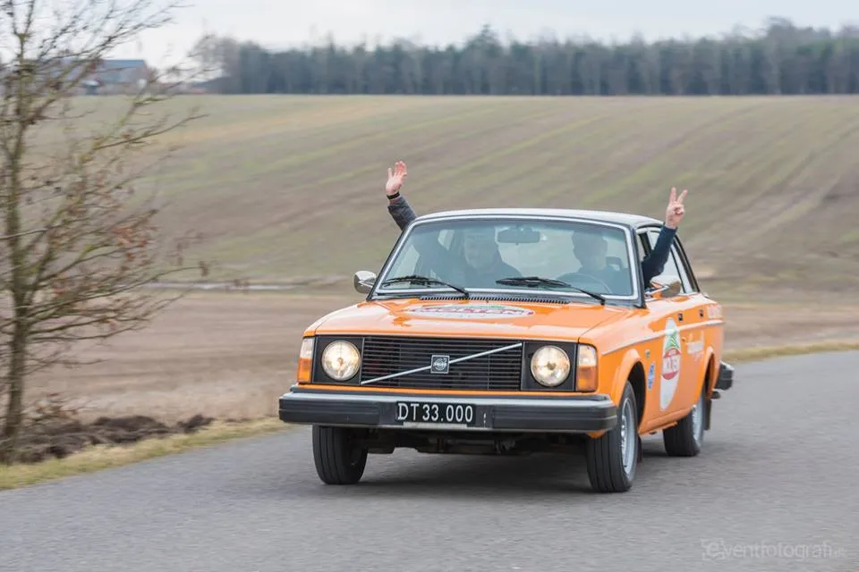

Squadra Molteni uden wattmålere og radioer i 2019

Både verdensmester Valverde og Tour de Fance direktør Prudhomme, har for nyligt været ude og lufte ideen om, at forbyde watt-målere i cykelløb. Diskussionen bølger frem og tilbage – år efter år. Men ingen gør noget. Det er op til UCI, forlyder det. Men nu tager Squadra Molteni action.
Tunnelsyn, blodigt tandkød og en pedalarm der faldt af
Wattmålere og andet ligegyldigt moderne isenkram finder man ikke hos danmarks retro-cykelhold, der hælder til 1970 og -80’ernes mekaniske og klassiske cykelsport.
– Det der med watt-målere siger os ikke en skid. Alene det, at have sådan en fladskærm monteret dér foran på styret, ser jo fuldstændigt åndsvagt ud, siger siger Squadra Moltenis direttore tecnico, Grane Maaløe.
Forøvrigt kører vi, til vi har tunnelsyn og til tandkødet bløder. Det er to klassiske indikatorer for, at man yder det man skal.
Squadra Moltenis erfarne rouleur Jens Langergaard, er som altid klar i spyttet:
– Min kone bruger watt-rundeller til at fjerne make-up med. Dét skal jeg sat’me ikke rode med. Og jeg ved godt hvornår jeg træder til. Min pedalarm faldt af på vej op af Passo di Mortirolo i sommers – så bliver der altså trådt til, fortæller Jens Langergaard.
Ingen watt og radio
Også diskussionen om radio bølger frem og tilbage. Tidligere A-rytter og sportsdirektør Flemming Kirkegaard er vanligt skarp i sine udtalelser :
– Sportsdirektører uden radioer var helt normalt frem til Motorola-tiden. Derefter gik det helt galt. Så væk med det lort og lad rytterne tænke selv.
Squadra Moltenis Kaptajn Bjørnsteen er ikke bange for at skære igennem og lægge sig i front:
– Vi har aldrig brugt, og kommer heller ikke i 2019 til at bruge det dér watt-pis på Squadra Molteni. Og heller ikke radioer, lyder det fra Bjørnsteen.
Ja, selvfølgelig har vi Radio Molteni, men det er jo noget helt andet. Og i vores Volvo 244 har vi en FM-radio med kassettebåndoptager. Det er til at høre musik fra. Vores direttore sportivo Klaus Kjærsgaard kommunikerer med rytterne med håndtegn eller ved at råbe ud af vinduet. Det er sådan det skal være.

